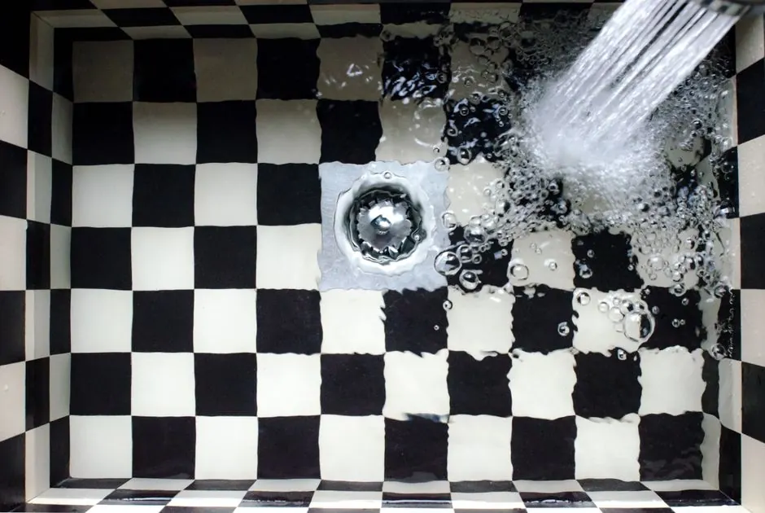
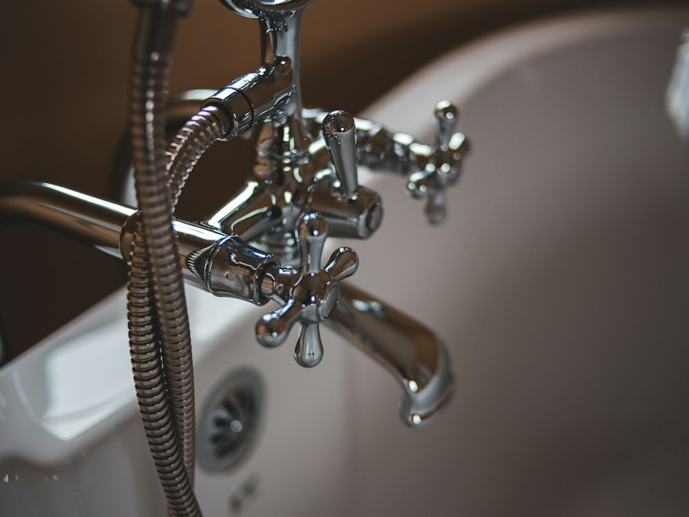
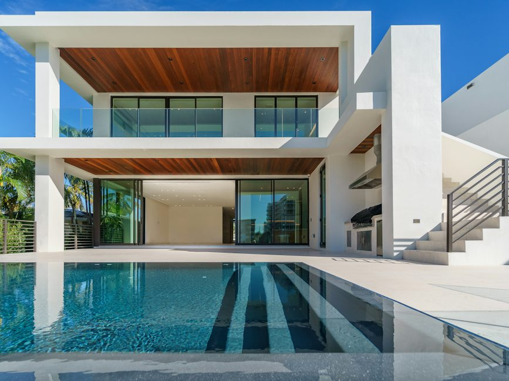

Drain Cleaning in Naples Park, Florida
Reliable, professional drain cleaning for single-family homes, vacation rentals, and remodeled properties across Naples Park. From clearing persistent kitchen sink blockages and sluggish beach showers to diagnosing recurring main sewer line backups, Naples Drain Pros brings prompt local service and thorough mechanical clearing to your neighborhood.
Local Naples DispatchZIP Code 34108Residential & Rental Properties
Drainage Care Designed for the Naples Park Community
Naples Park is one of Collier County's most vibrant residential communities, featuring an eclectic mix of original Florida ranch-style homes, newly constructed modern coastal residences, and active short-term vacation rentals situated just minutes from Vanderbilt Beach and Delnor-Wiggins Pass State Park.
Properly functioning drainage is critical for everyday comfort and protecting your property from messy overflows. Because many homes in the neighborhood host visiting guests, turnover cleanings, or expanded living spaces, plumbing fixtures frequently handle high laundry and kitchen demands. When drains slow down or water begins backing up, our Naples drain cleaning specialists use targeted drain snaking and cabling to clear obstructions quickly without using harsh chemical cleaners that can damage household plumbing.
Explore Naples Park drain services
Naples Park Service FleetEquipped with modern mechanical augers, video cameras, and high-pressure jetters to resolve residential and rental drain problems on the first visit.
Professional Drain Cleaning for Naples Park Homes
We provide straightforward, user-friendly drain clearing solutions to restore fast flow to your plumbing fixtures.
01
Clogged Drain Clearing
Fast mechanical removal of soap scum, hair, and localized debris from bathroom sinks, showers, tubs, and utility basins.
02Kitchen Sink & Disposal Clearing
Scour away congealed cooking oils, food residue, and grease deposits obstructing kitchen trap arms and garbage disposals.
03Motorized Drain Cabling
Deploy flexible steel cables with specialized cutting heads to retrieve deep blockages and wipe obstructions from secondary lines.
04Hydro Jetting Service
High-pressure water jetting that cleans pipe interiors to full diameter, washing away stubborn sand, sludge, and organic scale.
Common Drain Problems in Naples Park
Understanding the everyday drainage challenges experienced by homeowners and rental property managers in the area.
Beach Sand & Shower Sediment
Proximity to Vanderbilt Beach means fine coastal sand frequently enters outdoor rinse showers and master bathroom drains, settling in low pipe elbows. How we help: We flush and cable lines to remove heavy sediment traps.
Vacation Rental Plumbing Load
High guest turnover can result in flushable wipes, paper products, and cooking grease entering lines in short periods. How we help: We perform rapid sewer line cleaning to keep rental turnovers on schedule.
Aging Cast Iron & PVC Transitions
Many classic Naples Park homes have been updated where modern PVC ties into original cast iron laterals, creating catch points for toilet paper and debris. How we help: We clear and inspect junction points to prevent repeat clogs.
When a Clogged Drain Needs More Than a Quick Fix
Look out for these warning signs that indicate a deeper branch line or main sewer lateral problem.
Multiple Drains Backing Up Concurrently
If water rises in the shower when running the washing machine, the main sewer line is obstructed downstream.
Frequent Plunging with Immediate Return
Fixtures that clog again within days of plunging indicate a solid obstruction deeper in the drainage pipe.
Gurgling Sounds from Nearby Fixtures
Bubbling toilets or gurgling bathroom sinks point to trapped air struggling to pass a partial sewer blockage.
Persistent Unpleasant Drain Odors
Sewage smells rising from floor drains or sink basins indicate decaying organic material or poor venting along the pipe run.
Our Drain Cleaning Process
A systematic, transparent approach to diagnosing and resolving drain issues in your Naples Park home.
Identify the Problem
We listen to your description of the symptoms, check which fixtures are affected, and locate the nearest cleanout access point.
Inspect the Affected Line
We evaluate the pipe material and location, utilizing sewer camera inspection when necessary to pinpoint the exact obstruction.
Choose the Right Method
Depending on whether the blockage is caused by grease, hair, foreign objects, or tree roots, we select appropriate cabling blades or hydro jetting equipment.
Clear the Blockage
Our technician carefully works through the pipe to break up, retrieve, or wash away the clog without causing pipe stress or indoor mess.
Test the Drainage Flow
We perform multi-fixture flow tests and inspect drainage rates to verify that wastewater moves smoothly through the line.
Explain Next Steps
If underlying pipe damage, joint misalignments, or root intrusion are discovered, we clearly explain the findings and offer practical repair options.
Drain Cleaning for Naples Park Residents
Whether you reside along 91st Avenue North, 111th Avenue North, or near the Tamiami Trail corridor, Naples Drain Pros provides responsive residential drain service across the entire Naples Park street grid. Our mobile service units carry comprehensive tooling to handle single-fixture clogs, mainline backups, and preventive maintenance.
Nearby Service Locations: North Naples · Pelican Bay · Park Shore & The Moorings · All Service Areas
Request Service Today →
1234
Naples Park Service CoveragePrompt dispatch for single-family residences, beach rentals, and renovated cottages.
Frequently Asked Questions
Common questions from Naples Park homeowners and property managers about professional drain clearing.
Call +1 (239) 688 0557Why does my Naples Park drain keep clogging?
Recurring clogs in Naples Park homes often stem from a combination of older cast iron pipe scaling, sand accumulation from beach visits, grease buildup in kitchen lines, or root intrusion in underground lateral pipes. A video camera inspection accurately identifies whether the issue is inside the fixture trap or deeper in the main sewer pipe.
What should I do if several drains back up at once?
When multiple drains back up simultaneously—such as a shower filling when the toilet is flushed or washing machine water bubbling up through a floor drain—it indicates a main sewer line obstruction rather than an individual fixture clog. Stop running water immediately and call our dispatch line for prompt mainline clearing.
When should a drain camera inspection be considered?
A sewer camera inspection is recommended if clogs recur within a few weeks of snaking, if multiple fixtures drain slowly, before purchasing a remodeled property, or if you suspect tree root infiltration or cracked underground pipes.
Is hydro jetting appropriate for every drain?
Hydro jetting is highly effective for scouring grease, sludge, and sand from durable PVC and sound main pipes, but we evaluate the age and condition of the piping system first with a camera inspection to ensure the lines can safely handle high-pressure cleaning.
How can I tell whether a blockage is inside the home or farther down the line?
If only one sink or shower drains slowly while every other plumbing fixture in the home functions normally, the blockage is localized to that specific trap arm or branch. If running water at one fixture causes gurgling or backup in an adjacent room or lower fixture, the restriction is in the main branch or sewer line.
How does coastal proximity in Naples Park affect residential drainage?
Naples Park is situated close to Vanderbilt Beach, which means fine beach sand frequently enters shower and outdoor rinse drains. In addition, high coastal groundwater tables during heavy Florida summer rains can put extra pressure on aging drain lines, making proper pipe ventilation and clean sewer mains essential.
Need Drain Cleaning in Naples Park?
Get dependable, professional drain cleaning for your Naples Park home or rental property. Call Naples Drain Pros today to speak directly with our local team.

Schedule Service in Naples Park
Reach out to our dispatch team for drain unclogging, mainline sewer clearing, and video inspections throughout Naples Park.